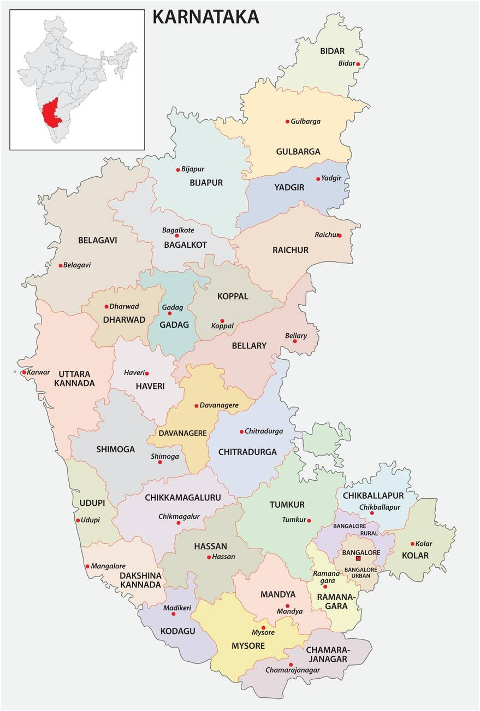

bidar
kalaburagi
yadgir
raichur
vijayapura
bagalkot
belagavi
dharwad
gadag
koppal
ballari
vijayanagara
uttara kannada
haveri
dharwad_haveri
shivamogga
udupi
dakshina kannada
chitradurga
chikkamagaluru
hassan
tumakuru
mandya
mysuru
kodagu
chamarajanagar
bengaluru rural
bengaluru urban
ramanagara
chikkaballapur
kolar
👆 Tap anywhere on the map to get coordinates
cx="—" cy="—"
—